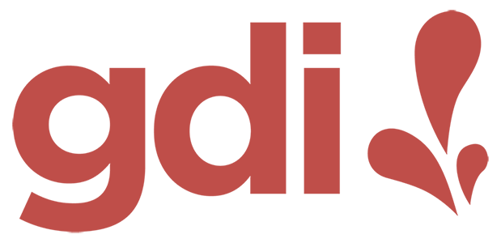
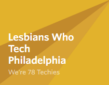
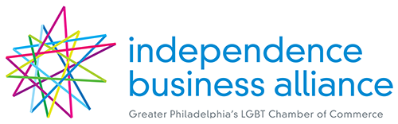

LOVE
I moved to Philadelphia in 1988 and I love this city with all of my heart.
1682
Philadelphia was founded in 1682 by William Penn.
Phil adelphiaPhilia: Love, Friendship or AffectionAdelphos: Brotherly or Sisterly
The name "Philadelphia" is made from the Greek words for love
Philadelphia has a long and pretty decent relationship with love.
1780
In 1780 Pennsylvania was the first state to repeal its anti-interracial marriage law
187 years before Loving v. Virgina made interracial marriage legal nationwide.
1965
In 1965 Philadelphia opened John F. Kennedy Plaza, but we know is as.
2009
In 2009 West Philly native Steve Powers’ created an art installation called "A Love Letter For You."
5. it is series of 50 rooftop murals from 45th to 63rd Streets along Market. You can see all the murals while riding the El.
4. it is series of 50 rooftop murals from 45th to 63rd Streets along Market. You can see all the murals while riding the El.
3. it is series of 50 rooftop murals from 45th to 63rd Streets along Market. You can see all the murals while riding the El.
2. it is series of 50 rooftop murals from 45th to 63rd Streets along Market. You can see all the murals while riding the El.
1. it is series of 50 rooftop murals from 45th to 63rd Streets along Market. You can see all the murals while riding the El.
SEPTA even had a Valentine's Day Love Train for a number of years that would tour the murals and people would hold their weddings on the train.
10-11-2018
Just a couple weeks ago In celebration of 30th National Coming Day.
The Mayor's Office of LGBTQ Affairs held an "Out in Love" LGBTQ wedding event at City Hall! This event is extra special because of another famous Philadelphian.
1929
Edie was born in 1929, she lived in Philadelphia and attended Philly public schools. She graduated from Temple University in 1950 and later
she worked at IBM for 16 years starting off as a mainframe programmer and leaving with the highest level technical position at IBM, Senior Systems Programmer.
In 1965 Edie started a relationship with Thea Spyer and 42 years later they got legally married in Canada after doctors told Thea she had only a year left to live.
After Thea died in 2007, Edie inherited Thea's estate and was required to pay over $350K in taxes which she wouldn't have to if their marriage was legally recognized. She filed a lawsuit that went all the way to the Supreme court, and in 2013, because of Edie's tenacity, the Supreme Court found the Defense of Marriage Act unconstitutional and same-sex marriage became legal for everyone in the US.
In 2017 Edie died at the age of 88. And just a few weeks ago, Philly renamed the block of 13th Street between Walnut and Locust "Edie Windsor Way"
This brave, Philadelphia lady changed millions of lives, including mine, with the power of love.
INDEPENCENCE
Philadelphia is not all about love, we have an independent spirit as well.
We don't always get along with others, but sometimes a tasks calls for independence.
Even if people tell you not to, sometimes we need to take risks and approach a challenge with a strategy that is independent of what is considered safe. When we take big risks can sometimes attain great rewards.
September 24, 2018
On September 24, 2018 Philadelphia took what may beens one of its biggest risks in its history.
The Philadelphia Flyers unveiled Gritty, it's new official mascot.
#TeamGritty
Suddenly Philly was #TeamGritty
Restaurants started making Gritty-themed food items like cupcakes.
People were dressing their kids up as Gritty. And we had the inevitable...
We nailed it. Gritty captures the independent, bold thinking of Philadelphia.
Since version 2.0, TinyMCE has been the default WordPress editor. That was 13 years ago.
For those of you not familiar with Gutenberg, it is a new, block style editor coming to WordPress 5.0 along with a complete overhaul of the post and page editing screens. WordPress 5 will be released as early as November 19.
Change is hard, but sometimes you have to make a dramatic change to evolve.
This is me and my friend Mika. You may know her from her talks at WordCamps all over the world or from her involvement with the WordPress Plugin Directory.
LezWatch.TV
The Greatest Database of Queer Female, Non-Binary, & Transgender TV
Her and I built and run a site called LezWatch.TV which is a database of Queer Female, Non-Binary, & Transgender TV characters and their shows.
We
We both love television and write about it for the site.
The Queerest Things I Watched Last Week
Year ago, at this very event, I came up with the idea to start a weekly column where I would recap all the shows I watched the previous week with LGBT content. And on Monday...
One year of blogging weekly
I will publish my 52nd post which will mark one year of writing weekly. I have built countless websites, but I have never written regularly for one.
Last August Mika installed the Gutenberg plugin on the site and me, who has never even used the Visual editor tab to write content, decided to start using it for my weekly post. I will be honest with you, I quickly went from
this to this. It was not an easy transition. There was anger and there was cursing. I have always formatted my content with HTML, but therein lies the problem.
I think I am doing a good job building great tools for people to use, concentrating on code and efficiency, but I was not doing enough to experience managing a site from a user's experience.
As the weeks passed, I got used to Gutenberg and the editor itself got better with every release. I fell in love with the redesigned editing screen in general and realized it improved my writing workflow.
Mika made us some custom blocks that made the code behind our content better, because to get things to look correctly in a giant TinyMCE editor you have to make some hacky html. But something else really convinced me Gutenberg was the right direction for WordPress.

Girl Develop It
Girl Develop It provides affordable programs for women to learn web and software development through in-person classes.
I have been developing the curriculum for and teaching the WordPress track for six years.
NUX
New User Experience
I have had the privilege of seeing groups of people brand new to WordPress before experience the classic and Gutenberg editors and they overwhelmingly prefer using blocks.
There will be bumps in the road, but now I'm a fan and I'm excited to see a Gutenberg future.
This was taken inside the Pennsylvania Academy of the Fine Arts the first and oldest art museum in the United States.
ENIAC The first computer
Electronic Numerical Integrator and Computer
Here is my wife Mia hanging one on our house.
Intersectionality Taking into account people’s overlapping identities and experiences to understand the complexity of issues they face.
It's not all about one thing.
First program in a women's prison.
Take the
LOVE / INDEPENCENCE / FIRSTS
Challenge
Operate from a place of
fear FUN!
Fear keeps us from moving forward.
Get out of your bubble
Make your next 20 Twitter followers people not like you .
Like and listen
Show support without inserting yourself into the conversation .
We could all stand to listen more and talk less. When someone who is not like you, gives you a view of their life from their perspective, it is a gift. Take it in and if it moves you, show your support with a retweet or the like button.
Be the minority in the room
Go to a networking event where everyone isn't like you .
Even if you are used to being the only person like you in the room, you can go to an event with folks that are new to you. Like going to an open captioned movie. Or attending a presentation or performance of a person with a different background than you.
Diverse Networking Groups

In Philly we have multiple diverse tech groups. Meetup.com is a great resource to find groups in your area.
Diverse Chambers of Commerce

In Philadelphia we have an assortment of diverse chambers of commerce and membership is open to allies. People go to chamber events because they want to meet people they can potentially do business with. With all of these organizations there are sponsorship opportunities to get you involved in these networks.
Meet diverse technologists
TA a Girl Develop It class .
Multiple times I've heard, "I would hire women if there were any." Women and non-binary folks make up 51% of the population, just because someone doesn't know any doesn't mean they don't exist.
Anyone can volunteer to TA for a Girl Develop It class regardless of their gender orientation. It's fun, rewarding, and you will be exposed to a wealth of amazingly talented people.
Avoid default pronouns
Don't only use "he" when referring to hypothetical people .
Programmer ≠ He
I've been to countless presentations, been in conversations and read posts where speakers or writers refer to hypothetical, fictitious programmers, developers & hires as he, him & guys.
When referring to hypothetical people, use gender neutral pronouns or switch back and forth equally
Outloud then
Reflect reality
Don't accept homogeneity as normal.
This is one of my heros Shonda Rhimes. She is an award winning creator of many television shows like Grey's Anatomy, Private Practice, Scandal, How to Get Away with Murder, Station 19 and many others. Shonda is a very successful woman with a net worth of over 120 million dollars. What has been one of her keys to success?
Diversity
In addition to being entertaining and addictive, Shonda's programs are also incredibly diverse and appeal to the widest audience possible. Almost everyone will see a person from their demographic reflected back to them as a character on her shows.
Ironically SR doesn't like the word Diversity.
normalizing . I am making TV look like the world looks. Women, people of color, LGBTQ people equal way more than 50 percent of the population. Which means it ain't out of the ordinary.
Diversity for diversity's normalizing's sake
"Diversity for diversity's sake" implies you're assembling an artificial group of people just for the sake of diversity. Instead of "Diversity for diversity's sake," it should be Diversity for Normalizing's sake. Reality is diverse. Homogeneity is a world like the Smurfs and we all know that is not real.
Consciously Unbias
We all have unconscious bias, work to challenge it .
All of us grow up leaning bias. It's not something to spend time feeling bad about, but instead, spend time consciously working on it.
50%
Professors from the U of Chicago sent fictitious resumes to 1,300 help-wanted ads Boston Globe & Chicago Tribune. Success of each resume = Callbacks for interviews. The resumes were identical except for the names white / aa.
13%
In a Yale University randomized double-blind study, 127 US STEM professors asked to evaluate resumes. Resumes were identical, except half "John" and half "Jennifer". Participants rated John significantly more competent and hire-able than Jennifer. And the ones would hire Jennifer offered 13% less in salary than John.
Think
The next time you are in the position to hire, approve a speaker for a conference, or any situation where you are reviewing people, think hard why your first impulse may be to turn someone down. Strive for a true Meritocracy.
32.1%
Nearly a third of all websites use WordPress and with that comes a huge responsibility. Who is participating in the creation of this software and who feels comfortable joining this community. We can't fall into the homogeneity creating for reality trap. We all have a responsibility to make this better.
Use the loving, independent and pioneering spirit of Philadelphia, with all its good and bad, to guide you to help make a better Internet.